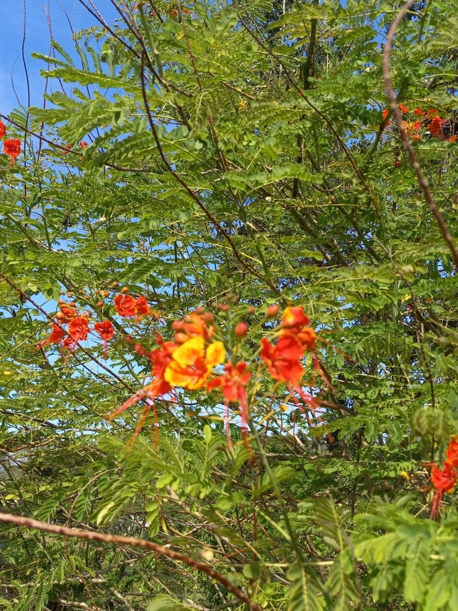

- Carl Linnaeus thought it was so beautiful he gave it the species name pulcherrima — Latin for 'most beautiful.'
- Used medicinally across the tropics as a traditional abortifacient and fever treatment, with real pharmacological research backing those claims.
- Butterflies and hummingbirds fight over the nectar-rich flowers, which bloom nearly year-round.
- It is the national flower of Barbados, appearing on that country's coat of arms.
Native to the tropics and subtropics of the Americas, though its exact origin is uncertain — possibly the West Indies. Now cultivated throughout the tropical world. It is the national flower of Barbados, where it is called the Pride of Barbados and appears on the national coat of arms.
- The Peacock Flower is the national flower of Barbados — appearing on the national coat of arms — making this one of the few plants in the park that is literally a symbol of national identity. Its name Flamboyant-de-Jardin hints at its relationship to the Royal Poinciana — both are in the Fabaceae family and share the same theatrical flowering habit.
- Despite its ornamental reputation, this plant has extensive documented pharmacological use. Bark and leaf infusions have been used as abortifacients across traditional Caribbean and South Asian medicine for centuries — and peer-reviewed research has confirmed anti-fertility properties in laboratory studies. Pregnant women should not handle or ingest any part of the plant.
- The mature seeds are genuinely toxic. The toxicity note often found for this plant understates the risk — while general handling is low risk for healthy adults, the seeds should not be ingested.
- Linnaeus named it pulcherrima — 'most beautiful' — in 1753, and the name has stood for over 270 years. Few plants have maintained their taxonomic compliment so consistently.
One of the park's most reliable butterfly and hummingbird plants, blooming nearly year-round with showy orange-red flowers whose long exposed stamens are accessible to a wide range of pollinators. Zebra longwings, sulphurs, and swallowtails work the blooms consistently, and hummingbirds probe the flowers regularly.
The near-constant bloom makes it a dependable nectar bridge during gaps when other plants are between flowering cycles.
By seed — seeds benefit from scarification or soaking overnight before planting. Resprouts vigorously from roots after frost damage.
Showy orange-red blooms with long red stamens extending dramatically beyond the petals — the signature feature. Appearing nearly year-round. Excellent butterfly and hummingbird plant.
Flat green seed pods turning brown at maturity, containing toxic seeds when ripe.
Feathery bipinnate compound leaves resembling Royal Poinciana — a close relative. Fine texture, giving the plant a light airy appearance.
May have scattered small spines on older stems and branches.
The feathery bipinnate foliage resembles a miniature Royal Poinciana. The orange-red flowers with dramatically extended red stamens are unmistakable. Watch for zebra longwings, sulphurs, and swallowtails at the blooms.
Don't eat any part of this plant. Immature green seeds are reportedly eaten in some traditions, but the mature seeds are toxic.
Bark and leaf infusions have documented abortifacient effects — pregnant women should avoid handling any part of the plant.
General handling by healthy adults is low risk. For dogs, the seeds and pods can cause vomiting and diarrhea if eaten.


- © teschaim (CC-BY-NC), via iNaturalist
- © sandytrailslvr (CC-BY-ND), via iNaturalist
- © Randall Carter (CC-BY-NC), via iNaturalist